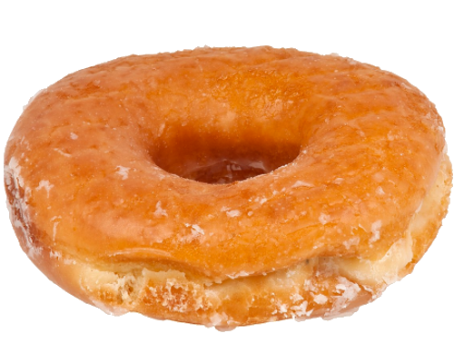

AbyssBox's Patch Notes (in reverse chronological order);
Version 1.6
- Updated to match UltraBox 2.3.
- This includes:
- Note Range Effect, This prevents notes from being played if they're outside of the note range's effect.
- Song Details, which allows you to put an author and description for every song. (This also gives other useful information).
- Strum Speed, which allows you to change the speed at which the strum chord type plays.
- Slide Speed, which allows you to change the speed at which the slide transition type plays.
- Unison Buzzing.
- Added Slarmoo's Box's Envelopes with Slarmoo's Box json importing compatability (Using the URL will not work!).
- Added a hertz offset for Ring Modulation.
- Removed the update prompt in favor for an "Update Popup" which is far less intrusive.
- Due to common complaints, All 'pixel art' themes have had their font changed to Roboto (The default font).
- If you want to reverse this, you can apply fonts to any theme the new font prompt.
- Added a prompt that allows you to change the font, you can even upload your own font files to use in AbyssBox.
- Most effects can now be enveloped.
- Songwide pitch shift.
- This allows you to change the key of the entire song with only one modulator.
- Doubled Pulse width from 50 to 100.
- Added new presets.
- In the "AbyssBox 1.3+ Presets":
- Distortion Bass.
- Phased Overdrive Guitar.
- Phased Picked Guitar.
- Accumula Guitar.
- In the new "AbyssBox Spooky Presets":
- Chipwave Music Box.
- Chipwave Spooky Pad.
- Due to the new preset category, the "Ghost House" preset has been moved to the "AbyssBox Spooky Presets."
- Added Dogebox2's Invert Wave effect.
- Renamed the "Use Mobile Instrument Settings" preference to "Use Instrument Tabs".
- There is now a bar telling you how many of your samples failed.
- Added two new themes.
- Frutiger Aero Night
- Woodland
- Updated two themes.
- Other small Bugfixes.
6/25/2025
Version 1.5.1
- Updated Frutiger Aero to be a little less laggy.
- Added tips to the Phaser Tip Prompts and Ring Modulation Prompts.
- Other small Bugfixes.
10/1/2024
Version 1.5
- Added a Preset Selector.
- When you enter the Edit Menu, you can enable or disable certain preset categories.
- Along with this, the preset categories that were once removed before have returned.
- Fixes to the Song Player and Song Recovery Prompt.
- New Presets:
- FM Violin.
- Shamisen 2.
- Picked Distortion Guitar.
- Future Keys.
- Light Bell.
- Added more options for Songwide Modulation. This includes:
- Songwide Bitcrush.
- Songwide Frequency Crush.
- Songwide Panning.
- Songwide Chorus.
- Songwide Distortion.
- Songwide Ring Modulation.
- Added new Ring Modulation Effect.
- Added new Phaser effect.
- Ported UltraBox's Import Modes feature.
- New SVG elements for non pixel themes.
- Added two new themes.
- Corporate Dark.
- Corporate Light.
- Added a Keybind to invert the muted state of all noise and pitch channels.
- Inverting the muted state of channels basically makes all muted channels unmuted and all unmuted channels muted.
- Selecting an area will only invert the selected channels muted states, including mod channels.
- Added .opus and .ogg as export options. (Thanks to LeoV for that)
- Updated the Embed for AbyssBox to also include the icon and a new color.
- Fixed a Bug that made the Unison Dropdown appear in instruments that didn't support it.
- Other Bugfixes.
9/14/2024
Version 1.4.5
- Added a preference which allows for PC users to use the Mobile Instrument Settings.
- Added over 70 new plants
- Updated a few easter eggs
- Merged the Import and Export Prompts into one.
- The Keybind to open the Import Prompt button no longer works, you must use the Export Prompt keybind to save your songs.
- Added a feature that allows you to set a theme for this song specifically:
- Changes the design of the mod channel notes to match the original design.
- By default this is set to none.
- Fixed the Beats Per Bar Prompt that prevented the user from closing the prompt.
- Other Bugfixes.
6/20/2024
Version 1.4 - The theme Update
Added an Advanced Theme Selector
- Now there are three tabs to the custom theme editor
- Template, which allows you to mix and match parts from other themes to make your own theme.
- Editor, which allows you to edit the colors of assets in the theme.
- Import/Export, which allows you to import and export themes to your computer as '.css' files
Changed the appearance of the mod channel notes.
Added 33 new themes, 21 of which belong to ModBox:
The ModBox themes include:
- ModBox 2.0
- Artic
- Cinnamon Roll
- Ocean
- Rainbow
- Float
- Windows
- Grassland
- Dessert
- Kahootiest
- Beam to the Bit
- Pretty Egg
- Poniryonshka
- Gameboy
- Woodkid
- Midnight
- Snedbox
- unnamed
- Piano
- Halloween
- Frozen Over
The Other themes include:
- Nepbox Laffey
- Yume Nikki
- ShitBox 1.0
- ShitBox 3.0/shitbox4
- ShitBox Realm
- ShitBox ModBox 2.0
- DogeBox Way too Dark
- BirdBox Dark
- BirdBox Light
- Nepbox Piano
- Nepbox Snedbox
- AbyssBox Piano
Speaking of themes, there are preferences to give your website a great new appearance:
- Advanced Color Scheme:
- Used in the ModBox themes, and a few of the other new themes too. This enables the pattern editors pitch backgrounds to change color individually.
- Most themes that use this preference are marked with a [!] symbol.
- By default this is false.
- Use Old Mod Notes:
- Changes the design of the mod channel notes to match the original design.
- By default this is false.
- Highlight Third Note:
- Highlights the third note, similar to Highlight Fifth Note.
- This will not always match the current scale, so keep that in mind.
- This is a port of a Preference from Sandbox.
- By default this is false.
Added 29 variables that can be used in themes.
Things from UltraBox.
Bugfixes.
Added a keybind to insert a bar before the current bar.
6/10/2024
Version 1.3 - The Loops and Song Player Layouts Update
- Added Loop modes
- Loop modes are a feature that allow you to change how the song loops in the song editor, there are three loop modes:
- Loop within bar - This causes the song to loop within the oval shaped bar below the track editor.
- Loop full song - This causes the song to loop when it reaches the end, it also removes the display of the loop bar.
- Do not loop - This causes the song to end when it reaches the end of the last bar.
- Added new themes:
- This includes:
- BeepBox Pixel
- Skeuomorphic/Early 2000's (thanks to LeoV for making this theme)
- Slushie
- Slushie 2
- Canyon 2
- Ghost House
- Ghost House 2
- Starry Studio (thanks to Chuck for making this theme)
- Updated Themes:
- Pretty much every AbyssBox original theme.
- Added Presets:
- Ghost House
- Supersaw Pluck
- Credits Bass (The Bass from Credits song for My death, thank you Vivi for making that song and this instrument.)
- Added the ability to change the notes appearance (This can be seen in the Forest 2 and Nebula 2 themes).
- Upgraded/Downgraded icons to match BeepBox instead of JummBox (enables more customization).
- Added an Egg.
- Fixed the Song Recovery Prompt.
- Added UltraBox's song URL shortener config and remove whitespace options.
- Added UnBox's shift+f keybind which puts the playbar at the beginning of the Loop Bar (only applies to the first loop mode).
- Added the Url Shortener to the song Player.
- Added a new Progress bar to the song player.
- Added new Song Player Layouts
- This includes:
- Music Box. (not a new beepmod)
- Vertical.
- Middle.
- Fixed many bugs.
5/2/2024
Version 1.2 - The Song Player Update
- Added Song Player Layouts!
- This includes:
- Classic.
- Top.
- shitBox4.
- BoxBeep.
- Added new themes:
- This includes:
- BoxBeep Dark.
- BoxBeep Light
- JummBox Light
- Added Upturn Layout
- Updated Themes:
- shitbox 1.0/3.0.
- Terminal 2.0.
- Frutiger Aero.
- BruceBox.
- AbyssBox Light.
- Changed song identifier from #u to #a.
- Fixed a bug where the Color Picker wouldn't delete itself after closing the theme prompt.
- Increased the Export Loop Limit from 4 to 16.
- Added a frosted glass backdrop for prompts (off by default, change in preferences to see this change).
As always, if you would like to make a suggestion for what AbyssBox
should add, go ahead and ping @choptop84 on BeepCord in the
#modded-beepbox channel!
3/30/2024
Version 1.1.1 - Bugfixes
Simple bug fixes, and an update to be up-to-date with UltraBox 2.2.3
- UltraBox 2.2.3 Changes
- JummBox bugfixes involving the loop bar.
- Added Catagories to Preferences.
- Fixed a bug where 1.0 songs would corrupt if they had custom unisons. The fix for this will have odd effects for older ultrabox songs, but other than that it should be fine.
As always, if you would like to make a suggestion for what AbyssBox
should add, go ahead and ping @choptop84 on BeepCord in the
#modded-beepbox channel!
3/6/2024
Version 1.1 - AbyssBox Expanded Update
This update is genuinely one of the biggest updates that I've done for AbyssBox, Lets start listing off features then!
- The Custom Theme Editor has been expanded!
- The Custom Theme Editor not supports backgrounds, has new options, has a new color picker, and it allows you to use any theme as a base!
- Given the massive size of this update, lets start off with the simplest things to cover, Themes! AbyssBox has added:
- WeebBox
- AweebyssBox
- Forest 2
- Nebula 2
- Scratch
- Scratch Addons
- Frutiger Aero
- Undertale
- Glyde
- Terminal 2.0
- I am on fire!
- 2012 Video Tutorial
- Half-Life: Source
- Scratch and Scratch addons was made by Neptendo, Glyde was obviously made by Glyde, and I was given Assistance with Frutiger Aero thanks to Glyde, Ruskah, LeoV and many others.
- Speaking of themes, I've actually updated several themes to be completely finished!
- Updated: Half-life. I added a new Title for the theme.
- Updated: AbyssBox Classic! This update adds a new background, icons, cursor, and a track font!
- This also applies to AbyssBox Competitive and AbyssBox Light
- Updated: Windows Xp! This update completely overhauls Windows Xp to it's absolute extreme!
- AbyssBox Classic has also been updated to feature new editor background sprites.
- lets move on to the new stuff!
- Heavily improved Mobile Support.
- Added Overlays, now your themes can have things overlaying the entire screen! This feature is best shown off in 'I am on fire!' and '2012 video tutorial'.
- Added Titles, Now your theme can have it's own custom title in the description. A few themes use this, 'I am on fire', 'Half-Life' and 'Half-Life: Source' use this feature.
- We've also added a new preset called Nokia Ringtone.
- Beyond those little things, We've also added every feature upto UltraBox 2.2.2.
- lets move on to the new stuff!
- What? Major new stuffs???
- Added Shortcut buttons! These buttons do things that are only accessable in the edit menu and via keyboard shortcuts, but with the added bonus of working on Mobile too! This will undoubtably help with a lot of the issues that plauge AbyssBox Mobile. I'm hoping there will also be future things that improve Mobile.
- Added a new Layout. Theatre! This layout is a fullscreen layout that allows you to view all the notes without the distractions of the Track Editor and The settings being there!
- I've also combined the Themes and Custom Themes Prompt into one!
- Hmm... Something's wrong with the hotdog...
Woah! This update was massive! Pretty crazy just how big this update was!
As always, if you would like to make a suggestion for what AbyssBox
should add, go ahead and ping @choptop84 on BeepCord in the
#modded-beepbox channel!
3/2/2024
Version 1.0 - The Full Release
This update is the biggest one yet! Adding several new features to AbyssBox. Starting with,
- The Custom Theme Editor!
- All of your custom theme needs in one place! Making your
own themes couldn't be easier! Just go to the Custom Theme prompt in
Prefrences and check it out yourself!
- Thanks again to LeoV for helping so much on making the custom theme editor, without him this feature wouldn't of ever released!
- Thanks to the Custom Theme Editor, we now have three new Colorblind Assistence themes! These themes are called:
- Deuteranopia
- Protanopia
- Tritanopia
- Deuteranopia was made by Neptendo, while I made the other two.
- Speaking of themes, We've actually added 3 new ones outside of colorblind themes, adding to a total of 6 new themes!
- New Theme: Half-life. This theme has a similar color scheme and appearance to the original Half-Life.
- New Theme: Doom 1993. This theme features a redlit sky and
the original doom font used in the first doom game. Thanks to Neptendo
for adding the Doom Styled AbyssBox logo!
- New Theme: Windows Xp, simulate the asthetic of the
classic interface of Windows Xp, complete with the original font, mouse,
and wallpapaer in the background. This theme also features unique
buttons similar to how Windows Xp looked Back then. We even have a
Windows Xp-esque logo replacing the abyssbox logo!
- AbyssBox Classic has also been updated to feature new editor background sprites.
- We're not done just yet!
- The layouts featured in update 0.9 have been updated, kind of?
- The layouts themselves haven't recieved any updates, but
the icons for them in the Layout Prompt has been fixed and now all of
them are the same size regardless of theme.
- We've also added two new presets for you to try out. Harmonic Piano, and Organic Synth.
That was quite a bit this time!
As always, if you would like to make a suggestion for what AbyssBox
should add, go ahead and ping @choptop84 on BeepCord in the
#modded-beepbox channel!
1/15/2024
Version o.9.2
- This update added only one change, but it's quite a big one!
- Supersaw is now in AbyssBox!!! This BeepBox 9.0 Feature is
quite lacking in most beepbox mods, and since now it's featured in
AbyssBox, we can officially use Samples, Custom Chip, The OP FM, and
Supersaw all in one package!
If you would like to make a suggestion for what AbyssBox should add,
go ahead and ping @choptop84 on BeepCord in the #modded-beepbox channel!
1/6/2024
Version o.9
- Added three new layouts!
- Flipped (AB), this layout reverses the Long Layout, currently unfinished but it'll work for now.
- Focus (AB), this layout reduces the size of the song settings by around 40%!
- Long (AB), This is an AbyssBox twist on the classic Long
Layout, normally the track editor would go under the instrument and song
settings, but now in this layout it actually does the opposite! The
settings will now go over where track would normally go! Wanna try it
out for yourself? Just make a song with over 75 Bars and swap between
the two layouts!
- Updated AbyssBox Light
- Before, the AbyssBox Light was a little hard to see thanks
to it's low contrast, now the contrast has been bumped up thanks to the
suggestion that Nintari made. She suggested that I increase the contrast
of the theme just a little bit and now it looks way better!
- Added two new fonts! AbyssType and AbyssType Small, they're in the testing phase, so expect major changes!
- The custom cursor for The three AbyssBox original themes now work!
All changes now are available in AbyssBox 0.9! If you aren't seeing
these changes being reflected in your version of AbyssBox, then I would
suggest clearing your cookies, fair warning though. Your settings will
be reset!
1/(4 or 5 idrk)/2024
Version o.8
- Added three new themes!
- AbyssBox Classic, The default theme.
- AbyssBox Competative, This theme is like the default theme, but all unnessasary colors are now black.
- AbyssBox Light, A light theme that's mostly pastel pink!.
- Attempted to add a new custom cursor for the new themes
1/2/2024
